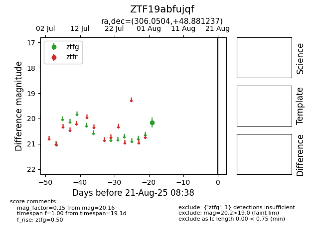

Target ZTF19abfujqf at 2025-08-21 08:38, see:
FINK: fink-portal.org/ZTF19abfujqf
Lasair: lasair-ztf.lsst.ac.uk/objects/ZTF19abfujqf
ALeRCE: alerce.online/object/ZTF19abfujqf
alt names
ZTF19abfujqf (ztf,alerce)
coordinates:
equatorial (ra, dec) = (306.0504,+48.88124)
galactic (l, b) = (85.4592,+6.49029)
photometry
last ztfg=20.16
1 ztfg detections
